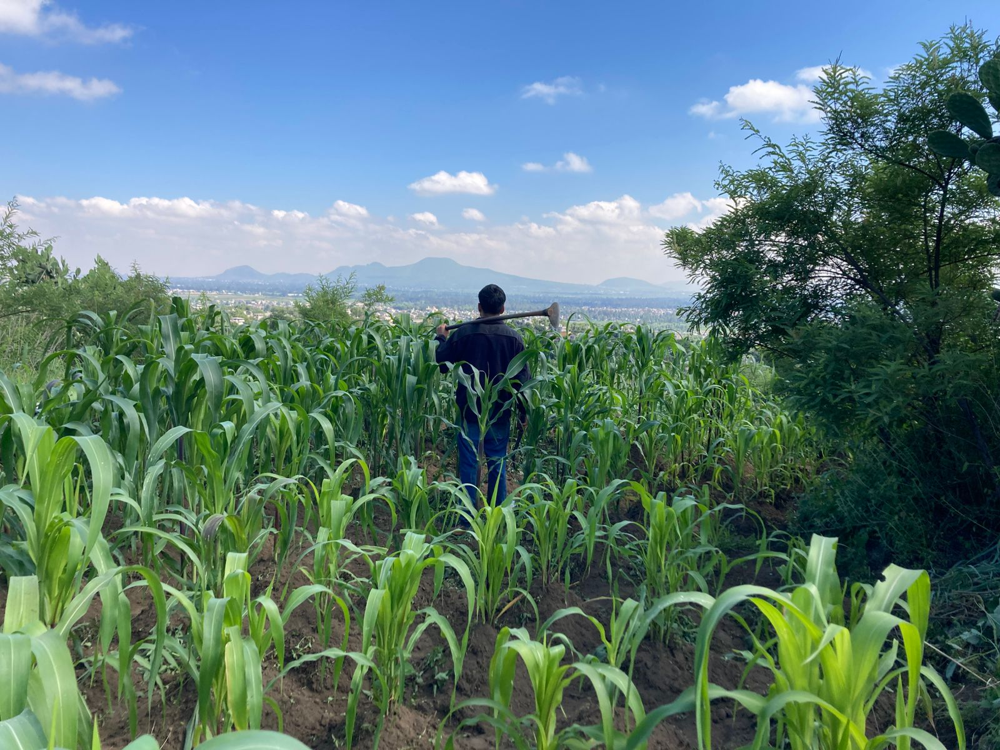

Lo que nos distingue es la actitud con la que enfrentamos los retos y las dificultades.

¡Hola! I’m David Nava Aguilar, 23, based in Mexico City and a 6th-semester Data Science student at Instituto Politécnico Nacional (IPN). My experience as a former technical specialist at Conduent Solutions allows me to map hardware preventive maintenance workflows to customer churn resilience strategies. I apply disciplined, results-driven habits (including basketball team leadership) to deliver impactful analytics and cross-functional collaboration.
¡Hola! I'm David Nava Aguilar, 23 years old, based in Mexico City. I'm currently pursuing my degree in Data Science at Instituto Politécnico Nacional (IPN)—sixth semester. My career is built on translating complex business problems into data-driven solutions.
With 2+ years of hands-on experience at Conduent Solutions, I've engineered systems to transform operational fault reports into actionable diagnostics, optimizing infrastructure availability and enabling preventive maintenance strategies. Now I'm applying that same engineering mindset to predictive analytics and customer intelligence.
My guiding principle: Understanding **why** we do something matters as much as **how** we do it.
This is why I believe in getting my hands dirty with data. Whether it's building a churn prediction system or optimizing a technical pipeline, I ensure every decision is grounded in evidence and drives measurable impact. I'm passionate about bridging the gap between technical rigor and business acumen—because great data science isn't just mathematically sound, it must be actionable.
Short-to-Medium Term (2026-2028):
Long-Term (2028+):
I'm an energetic person who believes in maintaining discipline through consistent habits. That's why I stay active—not just physically, but intellectually. My interests include: